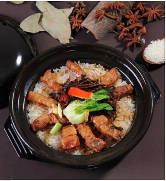
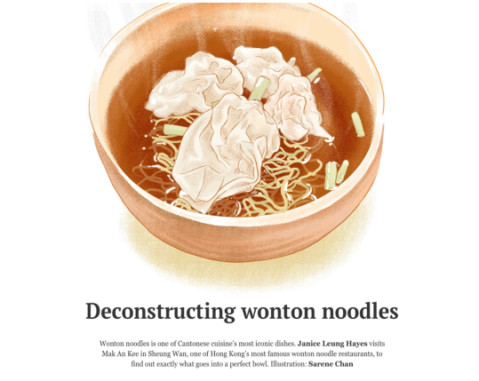
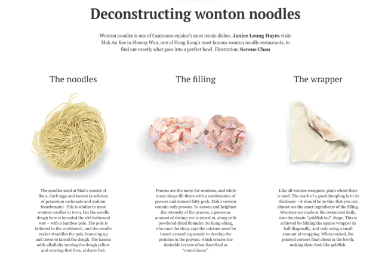
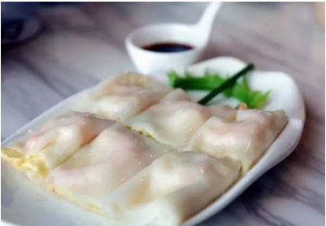

Suri Xie
 Chinese egg rolls are closely related to spring rolls
however, egg rolls are completely different from the spring
roll. Its origin remains unclear and mysterious, people only
know that egg rolls are from GuanDong, China. It is a sort
of deep-fried food, with the crispy flour skin that’s fried in
boiling oil. Inside the fragrant skin wraps a mix of chopped
pork, pieces of cabbage and other ingredients. After the hot
bath it had within the pot, the roll was served onto the table
and later drowned by the sauces. Egg rolls are a standard
holiday desert of the Han nationality, popular in all parts of
China. The rolls not only served their homes but also used
for hospitality. It has a long history and evolved from
ancient spring cakes. According to the ancient book "Sui
Shi Guang Ji" by Chen Yuanliang: “"In the spring day, we
eat spring cakes, lettuce, and the spring plate." The Qing
Dynasty "Yen Jing Sui Shi Ji" also stated: "In spring, rich
people eat spring cakes. "”
Chinese egg rolls are closely related to spring rolls
however, egg rolls are completely different from the spring
roll. Its origin remains unclear and mysterious, people only
know that egg rolls are from GuanDong, China. It is a sort
of deep-fried food, with the crispy flour skin that’s fried in
boiling oil. Inside the fragrant skin wraps a mix of chopped
pork, pieces of cabbage and other ingredients. After the hot
bath it had within the pot, the roll was served onto the table
and later drowned by the sauces. Egg rolls are a standard
holiday desert of the Han nationality, popular in all parts of
China. The rolls not only served their homes but also used
for hospitality. It has a long history and evolved from
ancient spring cakes. According to the ancient book "Sui
Shi Guang Ji" by Chen Yuanliang: “"In the spring day, we
eat spring cakes, lettuce, and the spring plate." The Qing
Dynasty "Yen Jing Sui Shi Ji" also stated: "In spring, rich
people eat spring cakes. "”
 ( BaiDuBaiKe N.D.). It are often seen that the folks custom
of creating spring cakes in spring and eating spring cakes
features a long history. There are many proverbs about
spring rolls, such as "A roll does not make spring",
"Longshengtang's spring rolls-inside and outside are not
people" and so on. Spring means the season spring, and
there is an honest sign of welcoming the spring in china.
( BaiDuBaiKe N.D.). It are often seen that the folks custom
of creating spring cakes in spring and eating spring cakes
features a long history. There are many proverbs about
spring rolls, such as "A roll does not make spring",
"Longshengtang's spring rolls-inside and outside are not
people" and so on. Spring means the season spring, and
there is an honest sign of welcoming the spring in china.
The egg roll is made using flour and eggs, which provides it a harder and sturdier texture and there will be bubbles appearing on the skin when it’s fried. It’s crispy on the surface and thick and doughy on the within. on the other hand, the Spring rolls have a skinny flour wrapper with no eggs used in the making. It is very light and flaky, when fried it becomes delicately crispy and crunchy all the way through. Spring rolls have a more extended history compared to egg rolls in china and are more popular than the egg rolls. However egg rolls and spring rolls both are significant to Chinese culture and will never be forgotten.
Approximate time taken: 40min- 110min. Nowadays, egg rolls spread to other parts of the globe. “There are numerous other versions of egg rolls in other countries like vietnam, india, USA , UK and even australia.” (TasteAtlas 2016). However, the egg rolls are always native to china and are a apart of chinese culture。
Philip Yang
 The delicious food of Guangdong do not only consist of Zongzi and reagular wine but also consist of Claypot rice (Bao Zai Fan) that people can see on the daily life on Guangdong people. The Claypot rice appears in the life of Guangdong people for already 2000 years which is during the prosperous Han dynasty, and it had been first practiced around area such as Guangzhou, Hefei, Dongguan, Shenzhen, and Shandong (baidu baike). It have slowly spread to different parts of China and being adapted by part of the world as time pass. Bao Zai Fan have its special magic which makes it hard for people to forget its appearance and taste. The origin of the Bao Zai Fan and the steps of making the special type of Bao Zai Fan are the interesting topics we will be talking about through out the essay.
The history of Claypot rice have started in a book of Han dynasty named “Li Ji Zhu Shu” which people have first make Claypot rice using a type of rice name Panicum miliaceum that is considered a very expansive food around that time period. It have turned into a food that is only for the empress and the emperor in the Tang Dynasty . After the Tang Dynasty, it follow the same recipe until the modern day that the world is more peaceful so people have time to improve the recipe.
Even though the Claypot rice have a long history, the dish used to hold the Claypot rice in place had never change which is always a clay. This is also one of the reason that China is keep making clay because it is always needed for the food and it could also help the increase of economic by providing more jobs and give more way to poor people to survive and make money (baidu baike). The Claypot rice have also developed a social hierarchy which is determine by the quality of the clay. A way to identify a good clay is to check if there is a golden crusty and crispy layer of rice at the bottom once the food is cooked. A good clay will also make a smoky, slightly burnt flavor of the dish that brings out the smell of rice and different type of food such as chicken and sausage (Leng 2018). Another important factor that determine the social class of claypot rice is the rice it is using. The rice with high social status will be long and easy to break with a shiny appearance. The peasants in the hierarchy of claypot rice will be having a exactly opposite properties as the elites, but you don’t need to worry that much even if you have unfortunately pick the peasants because it will get into a higher classes after you give it a bath (baidu baike).
After you get the ingredients, you can start cooking!
Soak mushrooms in warm water to cover until softened, about 30 minutes. Cut off and discard tough stems; slice caps in half. Set aside. Combine drummettes, oyster-flavored sauce and rice wine in a bowl; stir to coat. Set aside for 15 minutes. Combine soy sauce and sesame oil in a small bowl; set aside. Place a wok or stir-fry pan over medium-high heat until hot. Add oil, swirling to coat surface. Add ginger; cook, stirring, until fragrant, about 10 seconds. Add chicken; stir fry until evenly browned, about 3 minutes. Add mushrooms and 1⁄4 cup of the chicken broth; stir for 1 minute. Reduce heat to low, cover and simmer until chicken is cooked, about 5 minutes. Set aside. Place a clay pot over low heat; gradually increase heat to medium-high. Add rice and remaining 2 1⁄2 cups broth. Bring to a boil. Reduce heat to low; cover and cook until water level is just below top of rice, about 15 minutes.
Place chicken, mushrooms, and sausages over top of rice; cover and continue to cook for 15 minutes (rice should be tender and flavors combined). Drizzle soy- sesame oil mixture over top. Sprinkle with green onion slivers (Smithsonian 2019). After the claypot rice came to live, the commonly practiced step which is follow by most of the Chinese people is to stir the organized food with a metal spoon to give it a perfect mix of taste. The stirring will destroy the original appearance of the food but it will bring the taste of the food to a higher level where desire of staying with the food forever will rise in everyone’s heart. The recipe of Claypot is unexpectedly hard to understand, it took a lot of times. After a long time of patient waiting, you will be having the most delicious food in your life. The good things always came from a long time of hard working! You deserve all the beauty and the incredible taste of your precious Claypot rice!
Zepline Wang
Guangdong has a lot of delicious food such as seafood, slice cold chicken, and steamed rice in clay pot, these food attracts a lot of foodies coming to Guangdong. This article is base on one of the most classic food in Guangdong called Wonton noodle, which is a Chinese form of pasta. Compared to pasta in western countries which has a heavy taste with cream and milk, Wonton noodle has a light-taste soup using meat broth as the main ingredient. Moreover, it does not include big chunks of meat in it with only few shrimps in the wonton; the egg noodle is the main character of the dish. It doesn’t include preservative as well, which matches with the basic discipline for the dish: freshness.
The wonton was originated in Guangzhou, Guangdong in the Qin Dynasty, Wonton noodles were not given their name until Tang Dynasty. In the 20th century, people started to add noodles into Wonton soup and created Wonton noodles.
Although Guangdong has the most authentic Wonton noodle, Malaysia, Philippines, Singapore, Thailand, and Vietnam has their versions of Wonton noodles too. Malaysians serve Wonton noodles relatively dry, and the noodle is dressed with oyster sauce and garnished with chopped spring onions. Some stalls include deep-fried wontons in the dry versions as well. In Philippines, there are three distinct types of wonton noodle dishes found. First, people there uses mami, which is a noodle soup that has egg noodles, wontons, and various vegetables in a hot broth. Secondly, pancit molo, which is similar to mami, however, the noodles that are use for this type is the wonton wrappers themselves. Lastly, a third type of wonton noodles are stir-fry egg noodles sold by hawkers and in small "stand-up" type stalls.(wikipedia N.D) If your looking for a good recipe, here is one:
 There are many interesting legends of wonton noodle. The most famous one is about the Xiongnu in Chinese history. During the Han Dynasty, the Huns from northern place often harasses the border areas, they are causing lots of trouble there. The citizens there are distracted and cant have a normal life. There are two military counselor that helps the Xiongnu’s army. They were named "Hun" and "Tun". They are very ferocious and the citizens hate them deeply. Therefore, people invented wonton, they use flour wrapper to wrap meat and name it as wonton(Hun and Tun). They eat them to express the hate and wishes for peace(Baidu). Furthermore, there is another legend for wonton noodle. In the warring state period, king Fu Chai of the state of Wu defeated the state of Yue and captured king Gou Bian. In the same time, they captured a peerless beautiful girl name Xi Shi. After the victory of Wu, king Fu Chai is hedonistic and plays, dance, drinking and sex everyday. During a winter, king of Wu is still accepting tributes. All kind of delicious things are given to king Fu Chai, but he does not want to eat it. Xi Shi sees this in the eye and wanted do something. She went to the kitchen, she mixed the dough and rolled out the dough, making a new kind of food to cater Fu Chai. The leather turns to few patterns in Xi Shi's hand. Finally, she finish wrapping and put them into boiled water and add them into fresh soup. At last, she added some garlic, pepper, and a drop of sesame oil. She give it to king of Wu and he think it is extremely delicious. He ate a big bowl of it. Fu Chai asked repeatedly “what is this dessert?” Xi Shi laughed in secret. She said to herself that this fatuous ruler is dum and only know how to play and is muddle everyday. She replies to the king and told him this is called "Wonton"(In here, the Wonton symbolizes the hedonistic of King Fu Chai)(Baidu).
Linda Lin
Steamed vermicelli roll is a kind of traditional food in guangdong, it is famous in most of China as breakfast. It is made of rice paste and special salty sauce. Different city in guangdong adds different ingredients according to their preference. The most common ones are eggs, lettuce, pork, and shrimp. (China daily)
The creation of steamed vermicelli roll is actually a accident. In the early Tang Dynasty, two buddhist monk called huineng and huiji made a kind of Ci, but Ci that’s created were too thin to be divided into pieces , so huineng and huiji shoveled them back into a pile and then divided into sections, they founded that this new Ci tasted very unique and was different from the previous one, and they start making it and spread it. That is how steamed vermicelli roll is made.(Guangzhou travel guide)
Vermicelli has a long history. It is said that it originated from Longzhou (now Luoding, Guangdong) in the Tang Dynasty. The local people call it "longkan Ci". The name of vermicelli has a bright history. During the reign Emperor Qianlong, he traveled to the south of the Yangtze River. After listening to the advice of Ji Xiaolan about how delicious steamed vermicelli roll is, he went to Luoding to try it. When he ate this kind of smooth food, Qianlong was full surprised and said: this does not really taste like Ci, it's a bit like pig intestines. It's better to call it vermicelli. Hence this kind of food is named vermicelli. At the end of the Qing Dynasty, the selling of vermicelli were already very famous in Guangdong.(Baidu baike) Steamed vermicelli roll is not only famous in guangdong, many people in different province of China likes to eat it. The Honglicun steamed vermicelli roll restaurant had 108 branchs in China. During the spread of Steamed vermicelli roll, it also evolved into lots of different kind and became the traditional food of lots of different provinces.(honglicun official website) There were two types of steamed vermicelli roll that were most known by people, the Drawer type vermicelli and the Boulard vermicelli. The drawer type is the original type that made by the Buddhist monk huineng and huiji made, it’s the most original steamed vermicelli roll and it’s the type most people eats. The boulard vermicelli is most famous around guangxi province, it’s thinner compared to the original drawer type vermicelli roll. The most important difference between the two type is that they focus on different part of the steamed vermicelli roll. The boulard is mainly focusing on the taste of ingredients (most of the sausage paste is made of glutinous rice flour and corn starch), the ingredients were chosen carefully and collocation reasonable, but the drawer type is mainly focusing on the sauce for the vermicelli roll, they made special salty sauce by adding some Oyster sauce and sugar. Also, there were many other kinds of steamed vermicelli roll, for example Juan vermicelli roll( Juan means circle in Chinese), this kind of steamed vermicelli roll is also famous in Guangong, they do not add any ingredients, it’s only vermicelli roll made of rice paste, and because of that people can make the kind of sauce they like, they can even make them sweet.(Baidu baike N.D)
Chinese Egg Roll
- Sui Shi Guang Ji - an ancient book by Chen Yuanliang
- Yen Jing Sui Shi Ji - an ancient book written by Fu Cha Dun Chong of the Qing Dynasty
- Longshengtang - a town in the region of GuangDong
- Spring roll - cuisine originated in southeast asia and china, similar to egg roll
Won-ton noodles
-won·ton (in Chinese cooking) - small dumpling or roll with a savory filling, often of minced pork, usually eaten boiled in soup.
-Xiongnu – a tribal confederation of nomadic (move around) people who, according to ancient chinese sources, inhabited the eastern Eurasian Steppe from 3rd century BC to the last 1st century AD
Clay Pot Rice
- Li Zhu Shu – “Book of rites” is a collection of descriptions of ritual matter written during the late warring states and former Han periods. One of the Five Confucian Classics and one of the three ritual classics.
- Panicum miliaceum – a grain crop that appear before 10,000 BCE in Northern China
- Sesame oil – a pale yellow bland semi drying fatty oil obtained from sesame seeds and used chiefly as an edible oil, as a vehicle for various pharmaceuticals, and in cosmetics and soaps
Steamed vermicelli roll
-Emperor qianlong - the sixth emperor of Qing dynasty, named steamed vermicelli roll
-Jixiaolan - qianlong’s minister, introduce qianlong the steamed vermicelli roll
-Boulard vermicelli roll - a type of vermicelli roll that evolved from the original
-Drawer type vermicelli roll - the original vermicelli roll that’s founded by huineng and huiji

go home